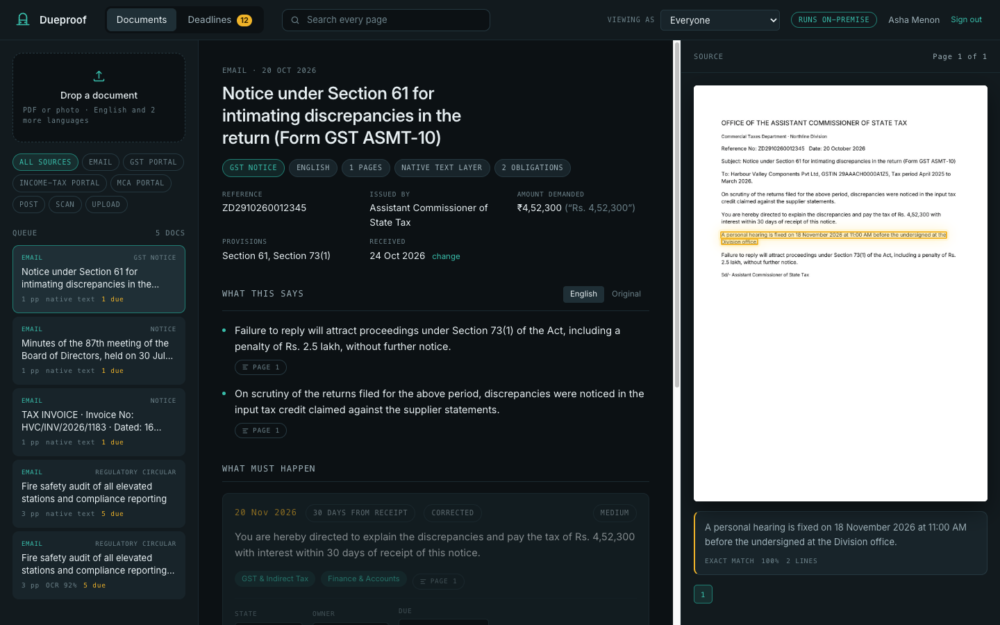
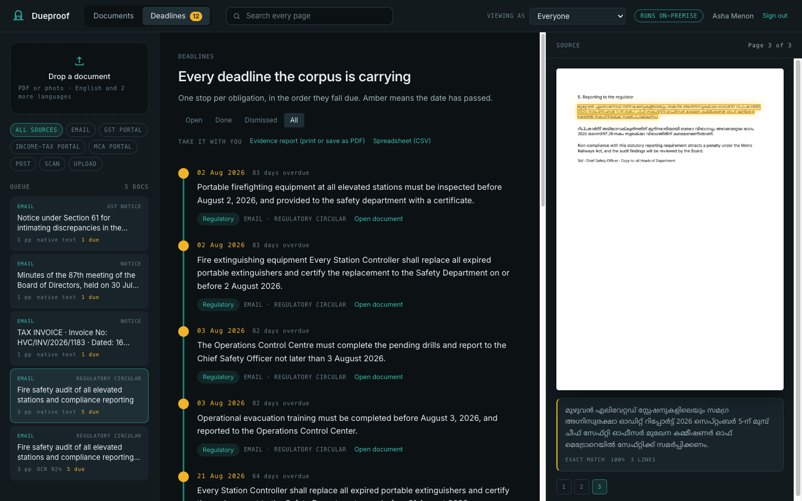

Never miss a date a notice gives you.
Dueproof reads the tax, regulatory and court notices your team receives, in English and 22 Indian languages, and turns them into one deadline register. Every date it finds is outlined on the page it came from, so anyone can check it in a second.
- Runs on your own server
- No cloud, no API keys
- Free and open source
From envelope to register, without retyping.
Drop in a PDF from the portal or a phone photo of a letter. In a few seconds it is read, understood and filed against the right desk.
Read
Text layers where a PDF has one; OCR for scans and photos, straightened first so the highlights still land on the right words. Hindi, Tamil, Bengali and the rest are translated locally.
Find
Duties, due dates, hearings, the amount demanded, the reference and the sections cited. "Within 30 days of receipt" is counted from the day you received it, not the day it was issued.
Prove
Each finding opens its page with the sentence outlined. When a passage cannot be found, Dueproof says so instead of drawing a box somewhere plausible.
A deadline you can't check is a rumour.
Every finding carries the exact sentence it came from and an outline on the page image. Confidence is stated plainly, and a passage Dueproof cannot locate gets no box at all. A wrong box with a confident label is the one mistake it is built never to make; its own test suite measures exactly that.
The sentence, word for word, on that page
Matched through OCR noise; check the outline
Shown, with a dashed outline and a warning
No box. Read the document.
Every notice filed the way your team would file it.
Reference number, issuing office, amount demanded, the provisions cited, when it arrived. Each finding goes to the desk that owns it: GST, direct tax, corporate secretarial, payroll and labour, regulatory, legal, finance.

Owners, corrections, reminders.
Assign each obligation, correct a date or a desk, mark it done. Corrections sit beside what was found and every change is kept. Each person gets a weekday digest of what falls due on their desk.

Written in Hindi, Tamil or Bengali? Still on the register.
Switch on any of the 22 scheduled languages. Sentences are translated on your machine so the same rules read them, and the original wording stays the proof. Six are tested end to end today; the rest share the same path.
- हिन्दीHindi
- தமிழ்Tamil
- বাংলাBengali
- తెలుగుTelugu
- اردوUrdu
- മലയാളംMalayalam
- मराठीMarathi
- ગુજરાતીGujarati
- ಕನ್ನಡKannada
- ଓଡ଼ିଆOdia
- ਪੰਜਾਬੀPunjabi
- অসমীয়াAssamese
- मैथिलीMaithili
- नेपालीNepali
- कोंकणीKonkani
- डोगरीDogri
- बड़ोBodo
- संस्कृतम्Sanskrit
- سنڌيSindhi
- کٲشُرKashmiri
- ᱥᱟᱱᱛᱟᱲᱤSantali
- ꯃꯤꯇꯩꯂꯣꯟManipuri
Outlined: tested end to end with the real translation model. All languages and what each needs
Built for the people who open the envelopes.
Teams whose week is shaped by other people's deadlines, and who cannot send client documents to someone else's cloud.
CA and CS firms
Hundreds of client notices across GST, income tax and MCA, each with its own clock. One register, by client and by partner.
In-house compliance
Circulars and notices from many regulators arriving by email, portal and post. Nothing falls between desks.
Legal teams
Orders, summons and show-cause notices, with hearing dates and the sections they rest on, ready for the matter file.
Public offices
Government orders and court directions in the state's language, tracked to the officer who owns them.
Yours, on your server.
Dueproof is a single Python program and a data folder. No document text leaves the machine: OCR, translation and extraction all run locally, and the translation model is checked against a pinned fingerprint every time it loads.
Try it on last month's notices.
Run it beside your current process for a month and measure it on your own documents before you rely on it.